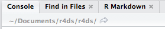
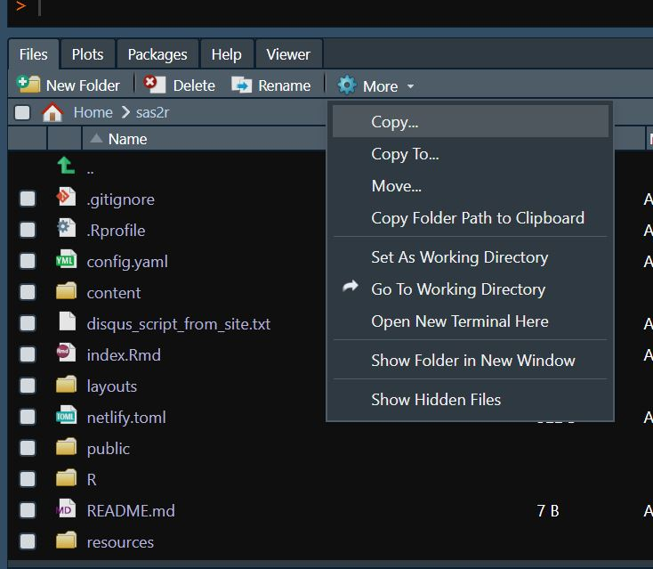

R Studio
In R Studio projects
Reference material from (R for Data science) https://r4ds.had.co.nz/workflow-projects.html
In the section 8.1 What is Real ? he says
“It is highly recommend that you instruct RStudio not to preserve your workspace between sessions:”

This will cause you some short-term pain, because now when you restart RStudio it will not remember the results of the code that you ran last time. But this short-term pain will save you long-term agony because it forces you to capture all important interactions in your code. There’s nothing worse than discovering three months after the fact that you’ve only stored the results of an important calculation in your workspace, not the calculation itself in your code.
There is a great pair of keyboard shortcuts that will work together to make sure you’ve captured the important parts of your code in the editor:
Press Cmd/Ctrl + Shift + F10 to restart RStudio. Press Cmd/Ctrl + Shift + S to rerun the current script.
- Where does your analysis live?
R has a powerful notion of the working directory. This is where R looks for files that you ask it to load, and where it will put any files that you ask it to save.
RStudio shows your current working directory at the top of the console: 
There is also another simple way creating project folder with in R studio IDE where you see the Files/Plots/Packages/Help/Viewer section

You can use New Folder option browse to location where you want to store and then create a new folder (Windows folder) and then assign it as working directory. This way you will be creating the working directory but not .Rprog file . This way is helpful to create a working directory by point and click .
The best way is to use R package “HERE” , it’s very flexible and great way to organize folder structure.
Very Nice “HERE” package picture that explains a lot in one go b

![Illustration by Allison Horst<allisonhorst (Allison Horst) (github.com)>